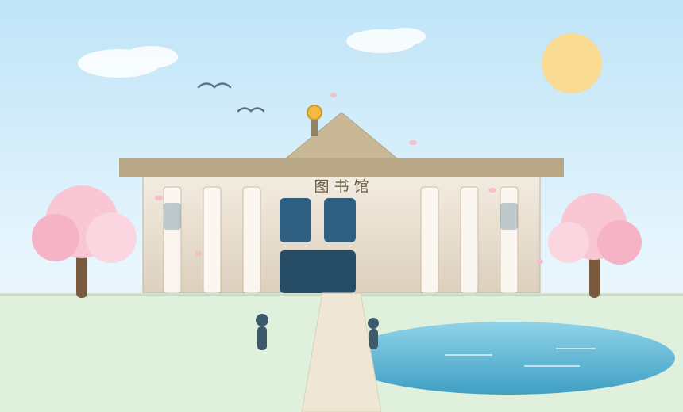

一分钟认识它
中国科学技术大学（USTC），1958 年创建于北京，由中国科学院创办，是中国第一批"985 工程""双一流"重点建设高校之一。1970 年南迁合肥，从此"全院办校、所系结合"，与中科院各研究所贴得非常近。
在科大读书最直观的感受有两个：一是课业密度，"硬核"不是形容词而是课程表；二是选择密度，大二开始就可以申请进实验室，本科生出现在国家研究中心并不算新闻。
这所学校并不试图让你兴奋，它只是不停地把难度摆在你面前，直到你习惯为止。

硬数据 · Quick Facts
| 项目 | 内容 | 项目 | 内容 |
|---|---|---|---|
| 创办时间 | 1958 年 | 校址 | 安徽省合肥市 |
| 隶属 | 中国科学院 | 校训 | 红专并进，理实交融 |
| 校区 | 东 / 西 / 南 / 北 等 | 办学定位 | 研究型大学 |
| 本科生规模 | 约 8 千人 | 研究生规模 | 约 1.5 万人（含中科院联合培养） |
| 知名成果 | "九章"光量子计算原型机 | 知名成果 | "祖冲之号"超导量子原型机 |
校史时间轴（点链接可跳转至学校新闻档案检索）
- 1958
在北京创建
由中国科学院创办，目标是为国家培养尖端科技人才。
- 1970
南迁合肥
整建制迁至合肥，"两次创业"的起点，也奠定了此后五十年的格局。
- 1978
创办新中国第一所研究生院
同年恢复高考后第一批少年班入学，"早慧教育"从此成为科大的标签之一。
- 1983
授予国内首批博士学位
学校在新中国学位制度建立中扮演了先行者角色。
- 2017 / 2022
入选"双一流"建设高校
数学、物理、化学、地球物理、计算机相关学科群持续进入建设名单。
- 2023 →
我在科大
东区机房里跑 xv6，夜里十一点半的图书馆前还会排着队 —— 我的故事被写进了这行的最后。
校园地标 · 一个学生的私藏清单
📚
逸夫图书馆
期末季的"军争之地"。闭馆音乐一响，整座楼像被统一按下了保存键。
自习密度 ★★★★★🌸
三月樱花
合肥的春天很短，但足够让整条路变成粉色。拍照的人比花还多。
出片率 ★★★★★💧
水上报告厅
建在水面上的报告厅，毕业照热门机位。风从塘面吹过来时特别清醒。
回忆价值 ★★★★☆🏛️
郭沫若校长雕像
老校区的标志，创建者之一。每次经过都会想起"理实交融"这四个字的分量。
地标指数 ★★★★★🍜
食堂与夜宵
改完实验代码后的一碗热汤面，是任何 reward function 都写不出来的那一项目标。
幸福感 ★★★★★🌌
操场的星空
合肥夏夜的操场，适合把白天想不通的问题重新想一遍。想不通就去跑两圈。
Debug 加成 +15%延伸阅读
如果你想更正式地了解这所学校，推荐这三个入口：
- 中国科学技术大学官网 —— 学校概况、招生与新闻。
- 科大图书馆 —— 馆藏、数据库与自习座位预约。
- 学校学术报告通知 —— 想进实验室的同学，先看讲座表。
本页所有文字为个人观感，不代表学校官方表述。